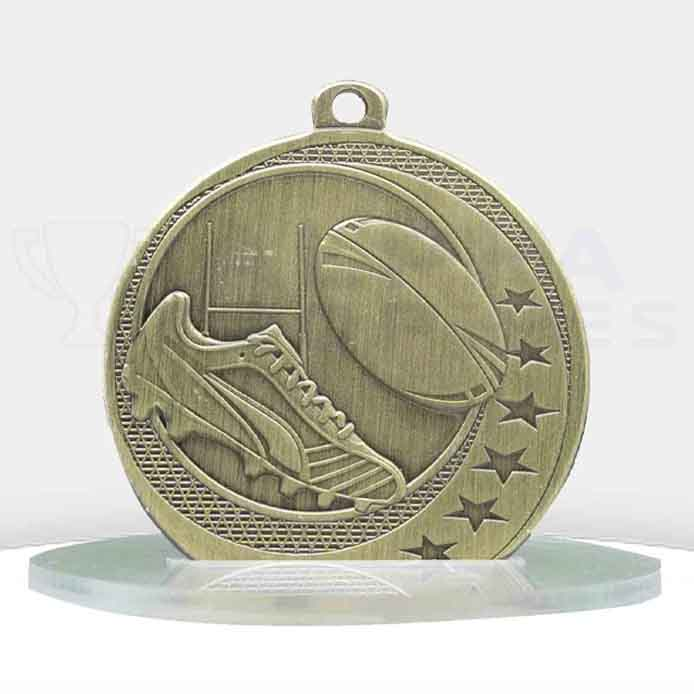
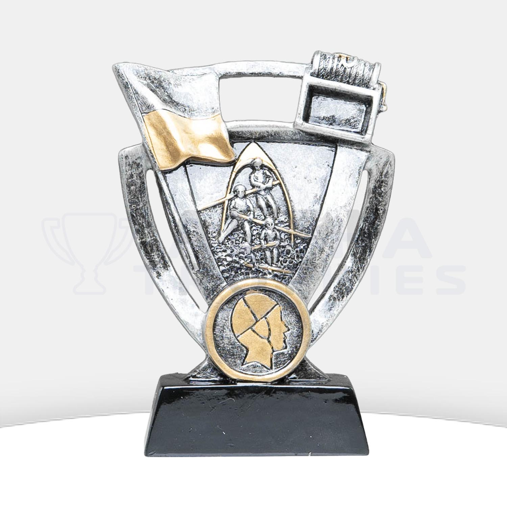
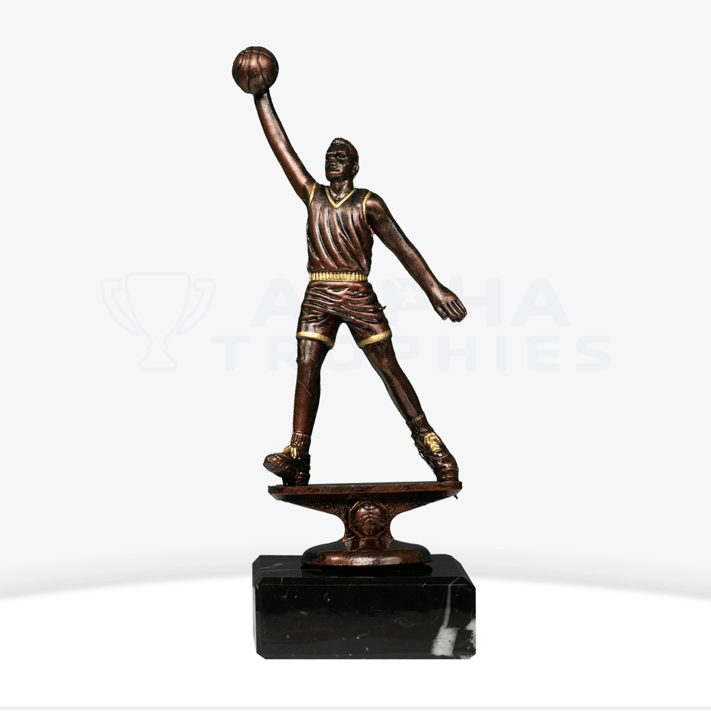
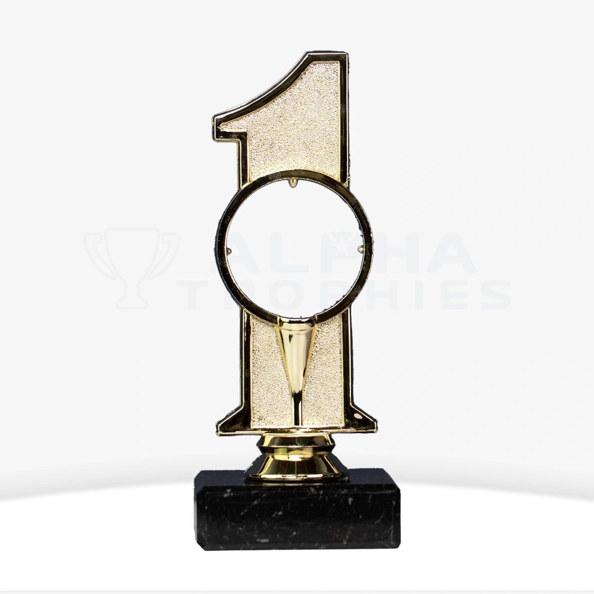

Trophies, medals and awards for NSW clubs, schools and businesses. Engraved in-house and delivered anywhere in the state, with two Sydney stores to call on.

From Sydney to regional coastal towns and country associations, we engrave and deliver trophies, medals and awards to every corner of NSW.
Two locations: Riverwood in the south-west and Castle Hill in the Hills District. Suburb guide from Bondi to Penrith.
Trophies in Sydney HunterNSW's second-largest urban area, spread from the Newcastle coast through Maitland and into the Hunter Valley.
Trophies in Newcastle–Maitland Central CoastGosford, Wyong, The Entrance and the beaches between, on the coast north of Sydney and south of Lake Macquarie.
Trophies in Central Coast IllawarraThe Illawarra's main city, set between the escarpment and the Pacific.
Trophies in Wollongong MurrayTwin cities on the NSW and Victorian border, divided by the Murray River.
Trophies in Albury–Wodonga Mid North CoastA coastal city between the ranges and the Pacific, with a busy school and club calendar.
Trophies in Coffs Harbour RiverinaThe Riverina's largest inland city, on the Murrumbidgee River.
Trophies in Wagga Wagga Mid North CoastA coastal town at the mouth of the Hastings River, known for its beaches and golf.
Trophies in Port Macquarie Northern RiversA river-and-beach town at the mouth of the Richmond River on the Northern Rivers coast.
Trophies in Ballina New EnglandA regional centre on the Peel River, best known as Australia's country music capital.
Trophies in Tamworth Central WestA Central West city at the foot of Mount Canobolas, known for its food and wine.
Trophies in Orange Southern HighlandsBowral is the hometown of Sir Donald Bradman, and home to Bradman Oval and the Bradman Museum.
Trophies in Bowral–Mittagong Orana, Central WestThe main city of the NSW western plains, on the Macquarie River.
Trophies in Dubbo ShoalhavenTwin towns on the Shoalhaven River, the gateway to Jervis Bay.
Trophies in Nowra–Bomaderry Central WestAustralia's oldest inland settlement, and home of the Mount Panorama motor racing circuit.
Trophies in Bathurst Lake MacquarieGrowing communities on the western side of Lake Macquarie.
Trophies in Morisset–Cooranbong Port StephensA bayside town on Port Stephens, popular for boating, fishing and whale watching.
Trophies in Nelson Bay Northern RiversThe Northern Rivers' regional hub, on the Wilsons River.
Trophies in Lismore Manning Valley, Mid North CoastThe Manning Valley's main town, on the Manning River.
Trophies in Taree Southern TablelandsOne of Australia's oldest inland cities, home of the Big Merino.
Trophies in Goulburn New EnglandA tablelands university city, home of the University of New England.
Trophies in Armidale Great Lakes, Mid North CoastTwin towns on either side of the Wallis Lake entrance.
Trophies in Forster–Tuncurry RiverinaA Riverina city in the Murrumbidgee Irrigation Area, known for farming and food.
Trophies in Griffith ShoalhavenLakeside communities around St Georges Basin, close to Jervis Bay.
Trophies in St Georges Basin–Sanctuary Point Mid North CoastLaurieton, Kendall and the villages around Camden Haven Inlet.
Trophies in Camden Haven Clarence ValleyA Clarence River city known for its jacaranda trees and the Grafton Cup.
Trophies in Grafton Eurobodalla, South CoastA South Coast town on the Clyde River, popular for fishing and boating.
Trophies in Batemans Bay Shoalhaven, South CoastA fishing harbour town on the southern Shoalhaven coast.
Trophies in Ulladulla Far WestA remote mining city in the Far West, closer to Adelaide than to Sydney.
Trophies in Broken Hill HunterA Hunter Valley town on the Hunter River, close to mining and wine country.
Trophies in Singleton Port StephensA growing town between Raymond Terrace and Williamtown.
Trophies in Medowie Macleay Valley, Mid North CoastThe Macleay Valley's main town, on the Macleay River.
Trophies in Kempsey Central WestA Central West town known for its wine, food and surrounding farmland.
Trophies in Mudgee Upper HunterAn Upper Hunter town surrounded by horse studs, mines and farms.
Trophies in Muswellbrook Central West, west of the Blue MountainsA town in the Lithgow valley on the western side of the Blue Mountains.
Trophies in Lithgow Northern RiversA coastal town at Cape Byron, the most easterly point of mainland Australia, with a strong surf culture.
Trophies in Byron BayNo match yet. Call 1300 485 645 and we will help.
Browse the categories NSW clubs order most. Every award includes free engraving.
 Winter favourite
Winter favouriteClub, junior and premiership awards

Presentation medalsPresentation-day medals for juniors and seniors

Coastal clubsPatrol, nipper and club championship awards
 Carnival season
Carnival seasonCarnival champions and age-group awards

Association sportTeam, MVP and association awards

Day eventsHole in one, nearest the pin and day winners
Every NSW order is engraved in-house and sent to your door, whether you are in Sydney, the Hunter, the Illawarra or further out. Standard shipping is a $9.90 flat rate and express is $25, after 5 working days production.
Built for rugby league and rugby union clubs, surf life saving clubs, swimming carnivals, basketball associations and school presentation days. More than 70 trophy categories are available.
Riverwood: 8/5 Leedham Place, Riverwood NSW 2210
Castle Hill: 51/9 Hoyle Ave, Castle Hill NSW 2154
Phone: 1300 485 645
Email: sales@alphatrophies.com.au
Yes. We deliver to every part of NSW, from Sydney to regional towns. Standard shipping is a $9.90 flat rate and express is a $25 flat rate, after 5 working days production.
We have two Sydney locations: 8/5 Leedham Place, Riverwood NSW 2210 and 51/9 Hoyle Ave, Castle Hill NSW 2154.
Fast Track is 4 working days ($40 plus 10% of the order, capped at $300). Priority Rush is 3 working days ($50 plus 15% of the order, capped at $300). Tell us your event date when you order.
Yes. These are some of our most popular NSW categories, and every item includes free engraving. Browse the tiles above or the full trophy range.
Yes, free engraving on every order.
No. Order one trophy or hundreds.